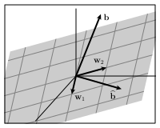

Understanding Linear Algebra
An open-access linear algebra textbook

David Austin
Grand Valley State University
austind [at] gvsu [dot] edu
Understanding Linear Algebra is a freely available linear algebra textbook suitable for use in a first undergraduate linear algebra course. The text aims to support readers as they develop their ability to think about linear algebra conceptually, their computational fluency, and their understanding of the role that linear algebra plays in shaping our society. It is also designed to support an active learning classroom environment.
-
Solutions manuals are available upon request.
Understanding Linear Algebra is written in PreTeXt and has been endorsed by the Open Textbook Initiative at the American Institute of Mathematics.
This work is licensed under a Creative Commons Attribution 4.0 International License.

© David Austin 2022